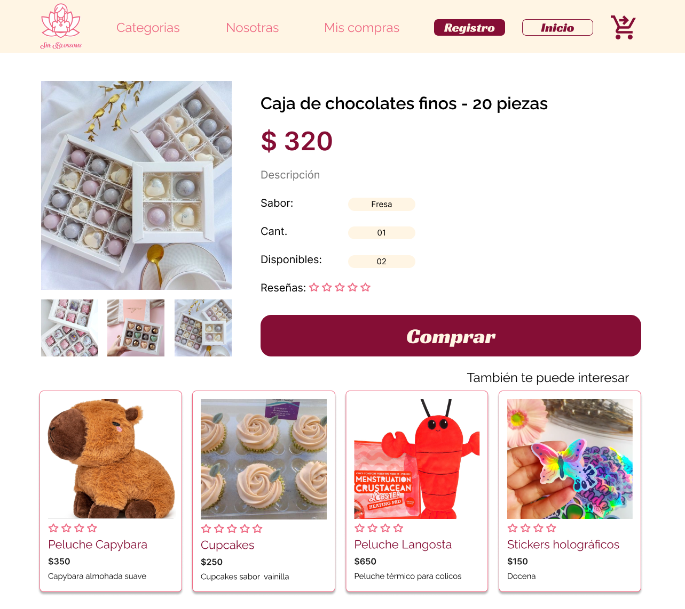
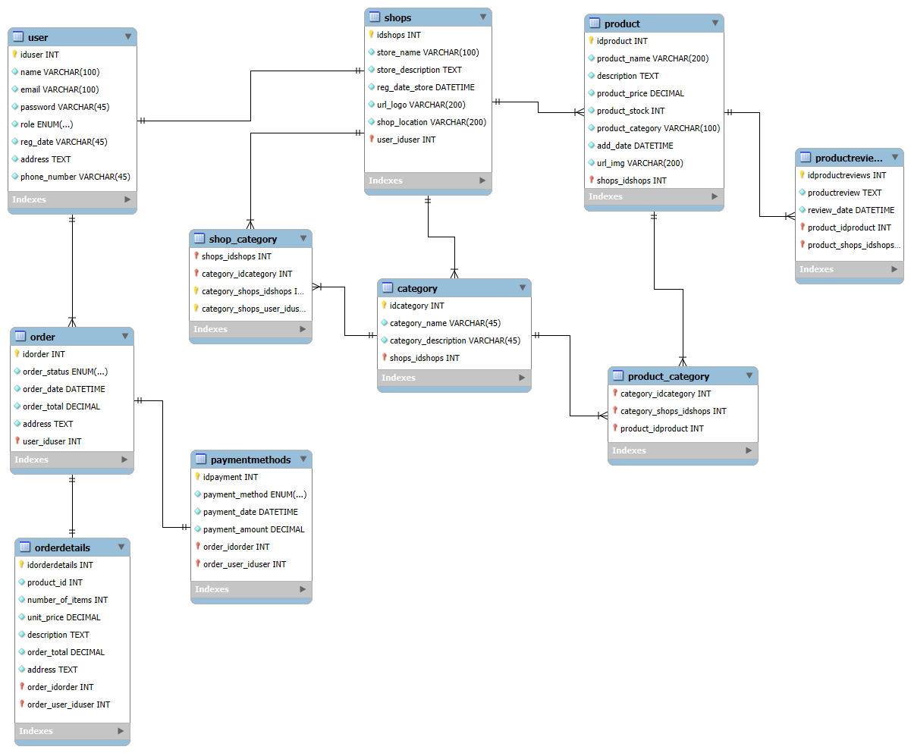

About Me
Hi! I'm Dan, a dedicated fullstack developer with a passion for building innovative solutions that empower people. I have expertise in data analysis, database management, and web development.
With a background in physical engineering from UAM Azcapotzalco and a Java fullstack bootcamp from Generation, I’ve contributed to multiple projects, working across all phases from design to implementation, utilizing tools like Figma, HTML, CSS, JavaScript, React, Springboot, and Bootstrap.
I’m passionate about causes that make a difference, where I can combine my technical skills with my desire to create social impact. In addition to web development, I’m exploring Big Data and analytics, excited by the potential these areas hold for solving complex problems.
Projects
Ecommerce She Blossoms

She Blossoms is an ecommerce platform designed to support and empower women entrepreneurs. The platform was developed using a modern tech stack, including HTML, CSS, JavaScript, React for the frontend, and Bootstrap was used to create responsive, user-friendly interfaces. The platform allows users to create and manage their own stores, list products, and track inventory. We also implemented user authentication and role management systems to ensure a secure and personalized experience. Throughout the development process, we followed the SCRUM methodology, ensuring iterative progress and adaptability to user feedback.
You can access the project's github repository here.
Backend for the ecommerce

The backend of the She Blossoms ecommerce project was developed using Java and the Spring Boot framework to create RESTful APIs. We utilized MySQL as the database for efficient data storage and management, while Hibernate was implemented for object-relational mapping (ORM) between the database and Java objects. For user authentication and authorization, JWT (JSON Web Tokens) was used to ensure secure access. The project used Git for version control, with GitHub as the repository platform.
You can access the project's github repository here.
Database design

The database design for the She Blossoms ecommerce project was implemented using MySQL. The schema includes multiple tables for managing users, products, orders, and categories. Users are classified into roles such as buyers and sellers, with each seller associated with a store that can have various products. Products are organized into different categories, and each product has attributes such as price, stock quantity, and description. Relationships between tables are managed using foreign keys to ensure data integrity. Indexes were added to optimize query performance, and MySQL’s relational model was leveraged to enforce structured and normalized data storage.
You can access the project's github repository here.
Skills
Contact
Have an interesting project? I would love to hear about it!